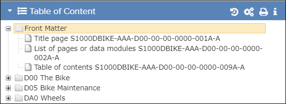
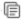
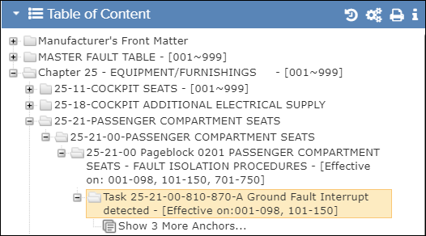
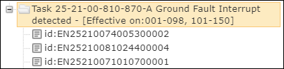

The Table of Content pane displays the structure of the publication selected in the Library.

Table of Content

Show More icon indicates that there is additional content. For example:
Table of Content (Task - Subtasks Available)

Table of Content (Task - Subtasks Expanded)
Click the  Minus icon to hide the first level anchors.
Minus icon to hide the first level anchors.

Table of Content (Revision Highlights)
| Component | Description |
|---|---|
|
|
Click this icon to minimize/maximize the Table of Content pane. |
| If a document is selected, the header shows the name of the selected document. | |
| Show More icon | For publications published with the iSpec or KCA builders only. This icon indicates there are additional anchor references, such as subtasks and graphics. Click the icon to display those references. You can click a reference to view it. |
| For publications published with iSpec or KCA builders. When the first level anchors are visible, click this icon to hide them. |
|
Not applicable for Pinpoint Standalone Light. Click this icon to display the Change Log dialog.Note: You must have permission for the Can review change
log privilege for this dialog to be visible.
You can view
the status of documents in this dialog. Refer to Change Log. |
|
Not applicable for Pinpoint Standalone Light. If you are an organization administrator, click this icon to set the revision that is shown for the selected publication. Refer to Manage Organization Revisions. |
|
| Click this icon to print the entire publication or a selected section of the publication. Refer to Bulk Print. | |
| Hide/Show Filtered Content icon | This icon allows the user to choose to show or hide the filtered content. Refer to Show/Hide Filtered Content |
| Click this icon to see additional publication details or define a landing page for the publication, Refer to Publication Metadata. | |
| Click this icon to reveal lower levels of the publication, such as sections, tasks, subtasks, and subjects. | |
| Click this icon to view the document in the Content pane. A loading indicator appears before the document is displayed. | |
| For publications published with iSpec or KCA builders. This icon indicates a first level anchor for a subtask. Click this icon to open the subtask. |
|
| Figure Icon | For publications published with iSpec or KCA builders. This icon indicates a first level anchor for a figure. Click this icon to open the figure. |
| Sheet Icon | For publications published with iSpec or KCA builders. This icon indicates a first level anchor for a sheet. Click this icon to open the sheet. |